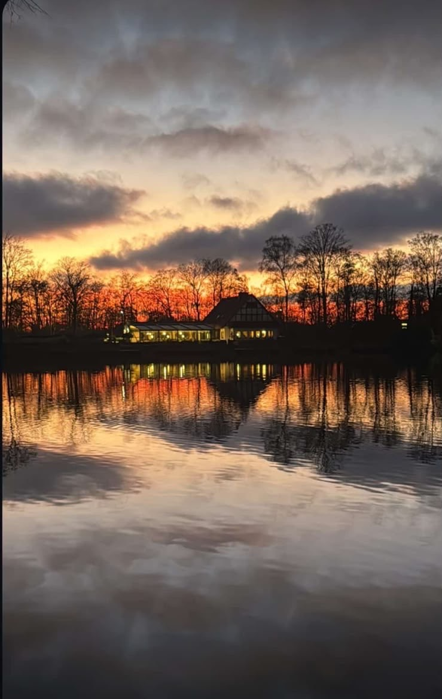
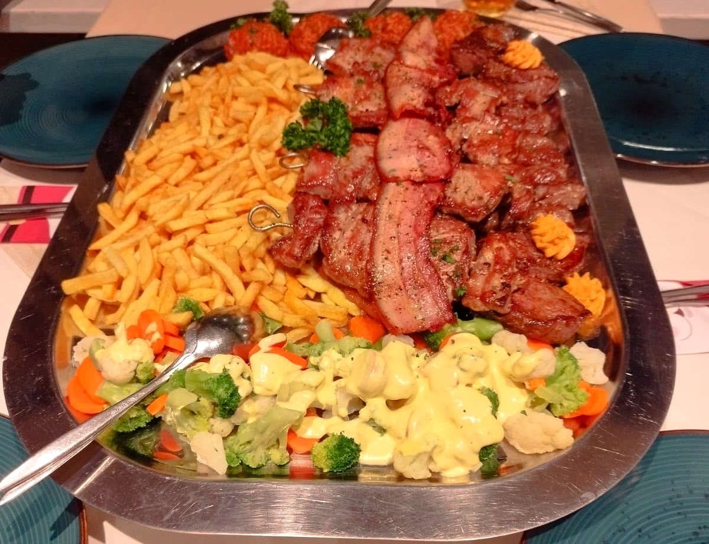
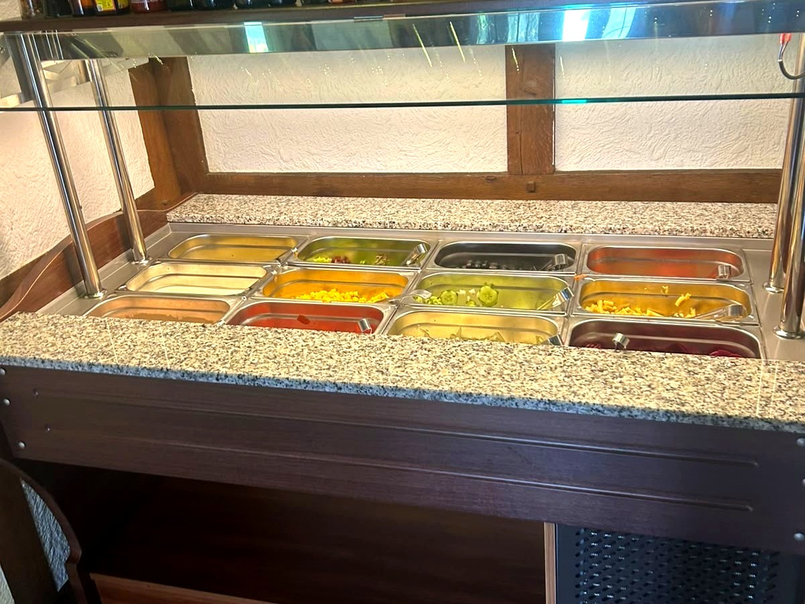
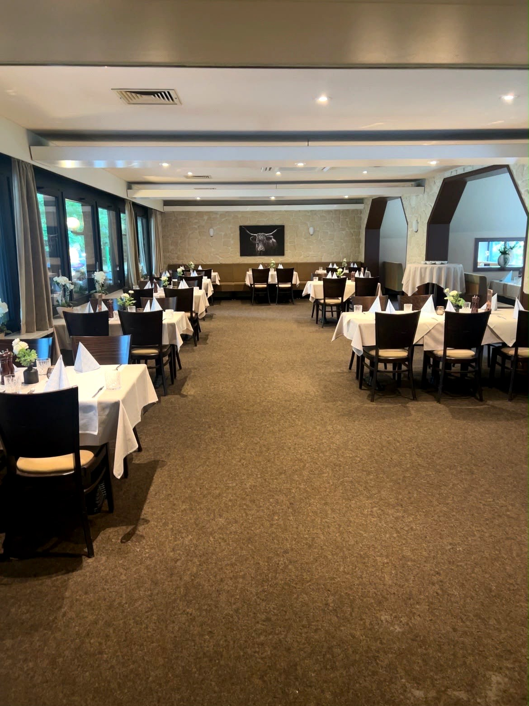

Ahlen · Am Stadtwald
Der Tisch am Wasser.
Landrestaurant und Café direkt am Langst-Teich. Terrasse über dem Wasser, Küche vom Grill, Salatbuffet zu jedem Hauptgericht.

Die Terrasse, wenn das Licht angeht
Täglich ab 11:30 Uhr
Dienstag ist Ruhetag
Ankommen
Erst der Wald, dann der Teich.
Wer aus Ahlen kommt, ist in ein paar Minuten hier. Wer auf der Durchreise ist, hält an, weil das Haus am Wasser steht und davor genug Platz zum Parken ist. Ein Familienbetrieb: derselbe Wirt, dieselbe Küche, seit über einem Jahrzehnt.



Draußen sitzen
Überdacht, windgeschützt, am Wasser.
An sonnigen Tagen gibt es genug Schattenplätze. Und wenn das Wetter kippt, sitzen Sie trotzdem trocken, mit Blick über den Teich.
- Blick auf das Wasser von jedem Platz
- Hunde sind willkommen, Kinder sowieso
- Kostenlose Parkplätze direkt am Haus
- Mitten im Stadtwald, direkt am Spazierweg
Aus der Küche
Alles kommt vom Grill.
Steaks auf den Punkt, Balkan-Spezialitäten vom Rost, Platten für zwei. Zu jedem Hauptgericht gehört der Salat vom Buffet.

Englisch, medium oder durch. Sie sagen, wie.

Ćevapčići, Pljeskavica, Djuvecreis und Ajvar.

Rund zehn Zutaten, drei Dressings, so oft Sie möchten.
Die Karte
Ein Auszug.
Vom Grill
- Filetsteakab 29,00 €200 oder 300 Gramm
- Rumpsteakab 24,50 €auch mit Zwiebeln und Bratkartoffeln
- Argentinischer Teller27,50 €3 Rindersteaks mit Kräuterbutter und Bratkartoffeln
Vom Balkan
- Cevapcici16,00 €mit Ajvar, Zwiebeln, Pommes und Djuvecreis
- Grillteller20,50 €Spieß, Cevapcici, Schnitzel, Pljeskavica und Speck
Für zwei
- Steak-Platte58,00 €verschiedene Steaks mit Grillgemüse und Beilagen
- Balkan-Platte48,00 €so reichlich, dass ein Kind mitisst
Auch Schnitzel, Fisch, Nudeln und Vegetarisches.
Was Gäste sagen
0
Bewertungen bei Google, im Schnitt 4,6.
„Die Terrasse bietet auch an sonnigen Tagen genügend Schattenplätze mit tollem Ausblick.“
„Sehr gute Steaks gegessen. Auf den Punkt gegart. Preis-Leistung top.“
„Nach unserem ersten Besuch waren wir bereits ein zweites Mal dort, und auch dieses Mal war alles perfekt.“
Für größere Runden
Wenn es mehr als ein Tisch wird.
Geburtstag, Familienfeier, Betriebsessen: Neben Terrasse und Gastraum gibt es einen eigenen Saal: eingedeckt, ruhig, mit Platz für große Gesellschaften.
Sagen Sie einfach, wie viele Sie sind und wann. Den Rest klären wir am Telefon.
02382 8551018
Gut zu wissen
Damit der Besuch passt.
- Terrasse am Wasserüberdacht und windgeschützt
- Kostenlos parkeneigener Parkplatz am Haus
- BarrierefreiParkplatz, Eingang, WC, Sitzplätze
- Hunde willkommendrinnen wie draußen
- Karte & kontaktlosEC, Kreditkarte, NFC
- Für Familien & FeiernPlatz für große Runden
| Montag | 11:30 – 22:00 |
|---|---|
| Dienstag | Ruhetag |
| Mittwoch | 11:30 – 22:00 |
| Donnerstag | 11:30 – 22:00 |
| Freitag | 11:30 – 22:00 |
| Samstag | 11:30 – 22:00 |
| Sonntag | 11:30 – 21:00 |
Tisch sichern
Am Wochenende besser reservieren.
Tische werden direkt am Telefon vergeben, ein Anruf genügt.
02382 8551018 Jetzt anrufenHerkommen
Am Stadtwald 6.
Landrestaurant · Café Zur LangstAm Stadtwald 6
59227 Ahlen Route öffnen
- Kostenlose Parkplätze direkt am Haus
- Wenige Minuten aus der Ahlener Innenstadt
- Beliebter Halt für Motorrad- und Radtouren